SporTrax – Tennis Score and Stats Tracker
SporTrax helps tennis players keep score on Apple Watch and review their performance on iPhone. Track points, games, sets, and match progress in real time — no phone needed during play.
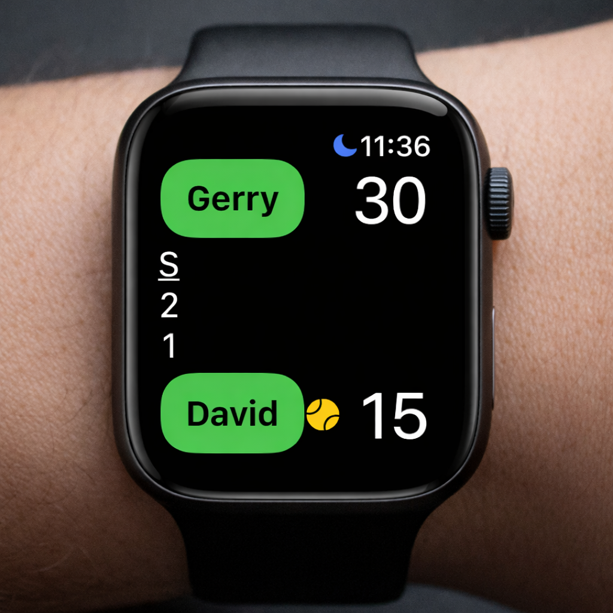
🎾 Features
- Apple Watch tennis scoring for points, games, sets, and matches
- Quick undo for correcting the last point
- Serve indicator support
- Match history on iPhone
- Detailed tennis match analytics
- Practice session tracking and summaries
- Heart rate, calories, and timer views when enabled on Apple Watch
- Simple, focused design for use during play
⌚ Apple Watch App
Start a match from your wrist and stay focused without needing your phone during play. SporTrax includes quick controls for scoring, undoing the last point, tracking the server, and reviewing match progress.


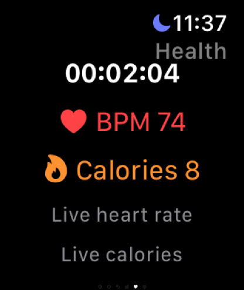

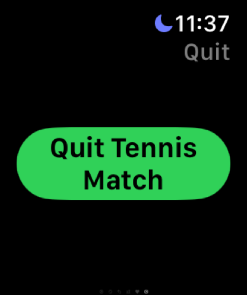
📊 Match Analytics
Get a detailed breakdown of your performance directly on your wrist. SporTrax tracks advanced statistics throughout your match to help you identify strengths and weaknesses:
- Point Breakdown: Total points played and won, including win percentages
- Break Point Efficiency: Track how many break points you created and converted
- Service Stats: Monitor your service points won and overall service win percentage
- Receiving Stats: See how well you perform when returning
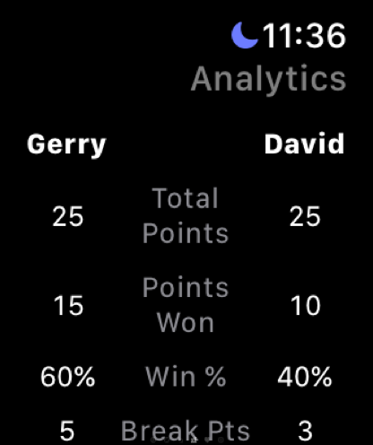
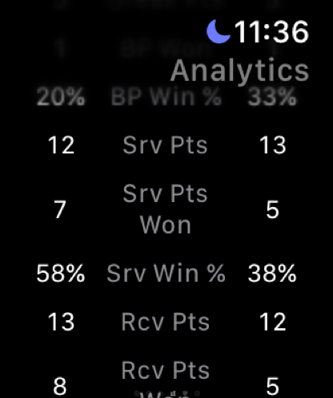
🏃 Practice Mode
SporTrax also supports practice tracking, so you can log practice activity and review practice summaries alongside your match history.
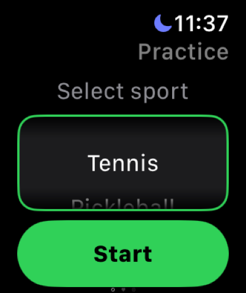
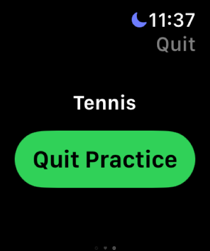
📱 iPhone Companion App
After the match, the iPhone companion app gives you a clear view of your tennis history and performance. Review match summaries, set-by-set details, timing, break point performance, service stats, receiving stats, and overall win percentages.
📈 Performance Summary
Aggregates every match you've played to show lifetime win percentages across key metrics — match & set win rates, break points, service, and receiving.

📋 Match History
The Activity log stores every match and practice session chronologically, showing who you played, when, and the final scores.
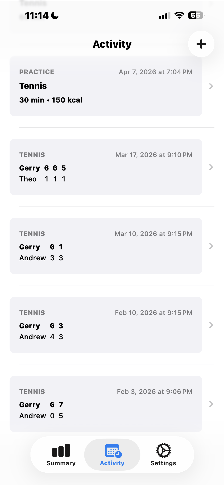
🔍 Match Detail
Dive deep into any match — box score, timing, and granular stats comparing your performance against your opponent.
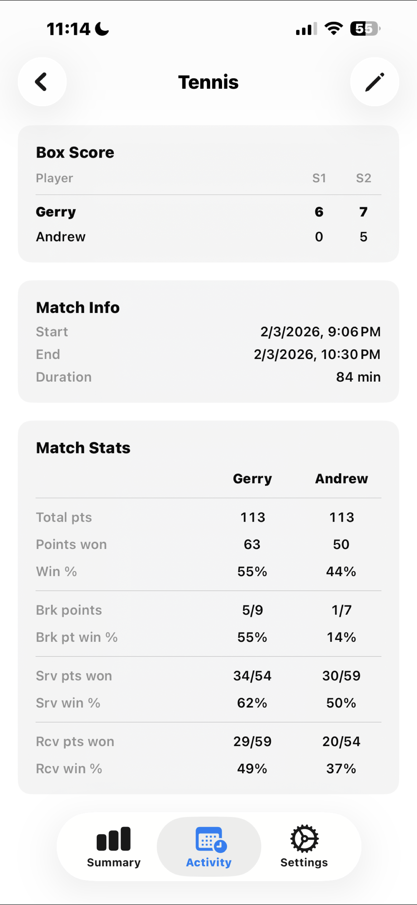
🏃 Practice Summary
Review your practice sessions with the same level of detail as your matches, including health and activity data.
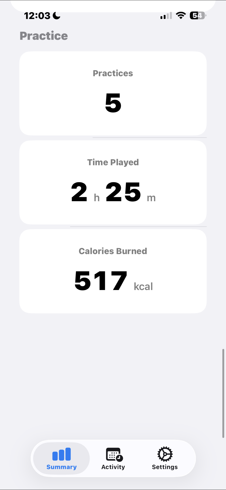
📝 Practice Detail
Get a full breakdown of each practice session, including duration, calories, and heart rate data.
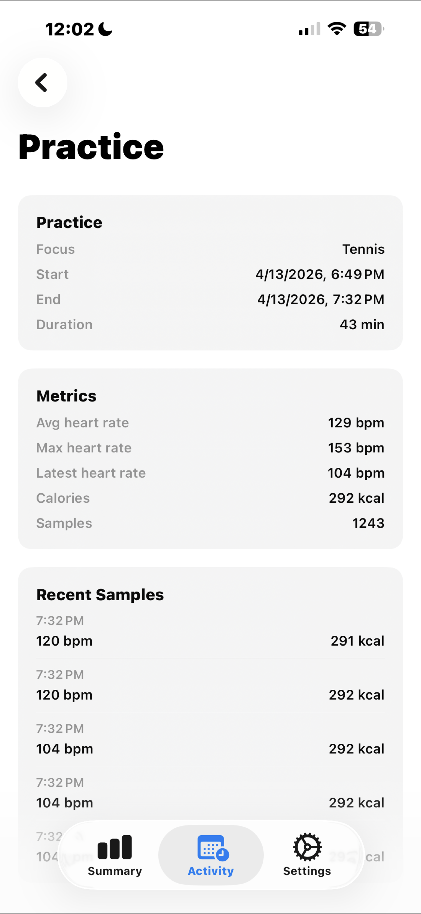
🎾 Download SporTrax
📧 Support
Need help or have feedback? Contact us at sportrax1201@gmail.com.
🔒 Privacy
SporTrax does not collect, store, or share any user data. View our Privacy Policy for full details.